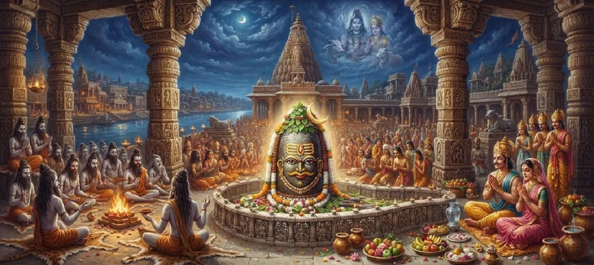

The Greatness of Mahakaleshvara
The tenth chapter of the Kotirudra Samhita narrates the awe-inspiring legend and supreme greatness of the Mahakaleshvara Jyotirlinga, enshrined in the sacred city of Ujjain.
It recounts the devotion of King Chandrasena, the menace of demon Dushana, and the terrifying yet compassionate manifestation of Lord Shiva as Mahakal to protect His devotees.
This chapter reveals how the Lord of Time conquers mortality and grants eternal fearlessness to those who take refuge in Him.
Chapter 10 Highlights
Ujjain Sanctuary
Mahakaleshvara is enshrined in the holy city of Ujjain, beloved of Shiva.
King Chandrasena's Devotion
Chandrasena ruled Ujjain with righteousness and deep devotion to Lord Shiva.
Demon Dushana's Threat
The wicked demon Dushana sought to destroy the righteous and disrupt worship.
Manifestation as Mahakal
Shiva burst forth from the earth as Mahakal to annihilate the wicked.
Lord of Time
Mahakal reigns supreme over time, death, and cosmic dissolution.
Eternal Protection
Worshipping Mahakaleshvara frees devotees from the fear of death.
Core Topics in This Chapter
The Sacred City of Ujjain and King Chandrasena
Chapter 10 begins by praising the glorious city of Ujjain, a sacred kshetra eternally dear to Lord Shiva and renowned across the three worlds.
The city was ruled by King Chandrasena, a monarch distinguished by his noble character, immense charity, and unwavering devotion to Lord Shiva.
The Peerless Devotion of the Citizens
Under King Chandrasena’s righteous governance, the citizens of Ujjain lived lives completely immersed in the worship of Shiva and spiritual righteousness.
Every household resonated with Vedic chants, and the entire kingdom flourished under the divine shelter of the Supreme Lord.
The Encroachment of Demon Dushana
Envious of the piety and prosperity of Ujjain, the wicked demon Dushana, bolstered by dark boons, marched upon the city with a formidable army.
Dushana sought to eradicate righteousness, suppress Vedic rituals, and terrorize the innocent devotees who worshipped Shiva.
The Crisis of the Righteous Devotees
Facing the onslaught of the demonic forces, the citizens of Ujjain did not despair; instead, they surrendered entirely at the feet of Lord Shiva.
Their desperate prayers echoed through the heavens, invoking the supreme compassion of the Lord who protects those who take refuge in Him.
The Terrifying Manifestation of Mahakal
Unable to tolerate the torment of His devotees, the earth split open with a deafening roar, and Lord Shiva emerged in His terrifying form as Mahakal.
Radiating the brilliance of a million suns and embodying the unstoppable force of time, Mahakal stood ready to vanquish all evil.
Annihilation of Evil and Protection of Devotees
With a mere glance of wrath, Lord Mahakal incinerated demon Dushana and his wicked army into ashes, restoring absolute peace to the realm.
Pleased by the devotion of King Chandrasena and his subjects, Lord Shiva agreed to permanently reside there as the Mahakaleshvara Jyotirlinga.
Transition to Chapter 11
Having witnessed the terrifying manifestation of Mahakal and the destruction of Dushana, the narrative flows seamlessly into Chapter 11.
Part 2 of the greatness of Mahakaleshvara further elaborates upon the boons, glory, and spiritual rewards associated with worshipping this sacred Jyotirlinga.
Key Teachings of Chapter 10
Conquest of Time
Mahakal transcends mortality, granting freedom from the fear of death.
Righteous Rule
Kings and leaders find true success through devotion and protection of dharma.
Divine Shield
Sincere refuge in Shiva shields devotees from all malefic forces.
Annihilation of Ego
Arrogance and adharmic forces are inevitably consumed by cosmic time.
Eternal Presence
Ujjain remains eternally blessed by the presence of Mahakaleshvara.
Supreme Grace
The Lord answers the call of the distressed with immediate protection.
Spiritual Reflection
The legend of Mahakaleshvara reminds us that time waits for no one, yet the Lord of Time stands eternally ready to protect those who surrender to Him. When external trials and internal ego threaten our spiritual peace, invoking Mahakal destroys the illusions of mortality and awakens our immortal soul. Ujjain stands as a timeless beacon that even death itself bows before sincere devotion to Shiva.
Living the Message of Chapter 10
Cultivate fearlessness by trusting in divine timing and recognizing that higher cosmic justice always prevails over adharma.
Perform your daily duties with righteousness, integrity, and deep dedication to spiritual principles.
Seek the refuge of Mahakaleshvara to overcome existential anxieties and conquer the inner fear of mortality.
Key Spiritual Concepts
The Lord of Time and Death, residing as a Jyotirlinga in Ujjain.
The terrifying, time-transcending fierce manifestation of Lord Shiva.
The pious and devout king of Ujjain protected by Lord Shiva.
The arrogant demon destroyed by Mahakal for attacking Ujjain.
The sacred holy city renowned as the abode of Mahakal.
Cosmic time, before which all material manifestations are ultimately dissolved.
Chapter Summary
Kotirudra Samhita Chapter 10 recounts the glorious legend of Mahakaleshvara at Ujjain. When the pious king Chandrasena and his devoted subjects faced annihilation from the wicked demon Dushana, Lord Shiva erupted from the earth in His terrifying form as Mahakal. Destroying evil and blessing the realm with His eternal presence, Mahakal established Ujjain as a sanctuary of liberation, paving the way for further elaborations in Chapter 11.
Frequently Asked Questions
1. What is the main subject of Kotirudra Samhita Chapter 10?
Chapter 10 details the supreme greatness, divine legend, and manifestation of Mahakaleshvara Jyotirlinga at Ujjain.
2. Who was King Chandrasena of Ujjain?
King Chandrasena was a righteous, devout ruler of Ujjain who was an ardent devotee of Lord Shiva.
3. How did Lord Shiva protect Ujjain from demon Dushana?
When demon Dushana attacked Ujjain to destroy its devotees, Lord Shiva burst forth from the earth as Mahakal to annihilate the wicked and protect the righteous.
4. What is the significance of Mahakaleshvara Jyotirlinga?
Mahakaleshvara is the lord of time and death, granting liberation from the fear of mortality and conferring supreme spiritual boons.
5. How does Chapter 10 connect to the surrounding chapters?
Chapter 10 follows the glory of Mallikarjuna Jyotirlinga from Chapter 9 and directly precedes Chapter 11 (The Greatness of Mahakaleshvara Part - 2).
6. What is the core spiritual takeaway of this chapter?
Unflinching devotion to Lord Shiva conquers all fears, subdues destructive forces, and grants victory over time and death.
“As Mahakal at Ujjain, Lord Shiva conquers time and death, eternally shielding His devotees with supreme grace.”
Continue Through Kotirudra Samhita
Chapter 10 explores the greatness of Mahakaleshvara. Continue to Chapter 11, The Greatness of Mahakaleshvara Part - 2.